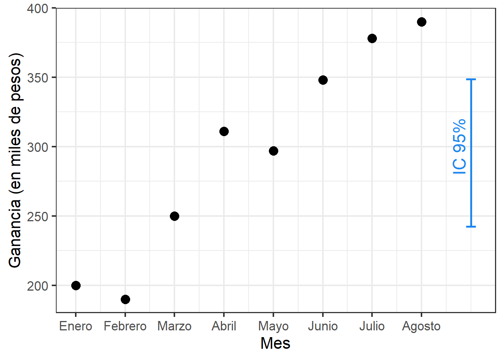
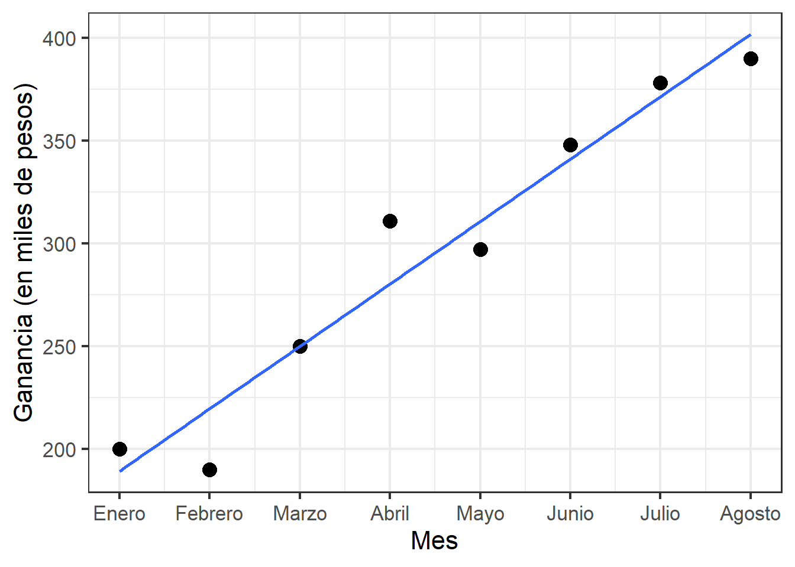
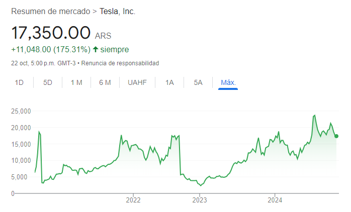
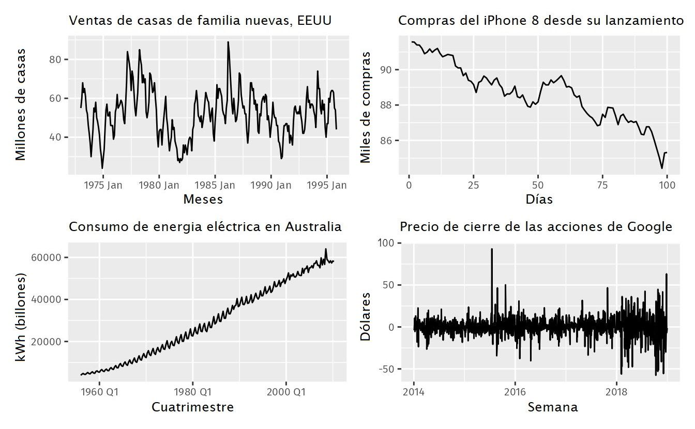
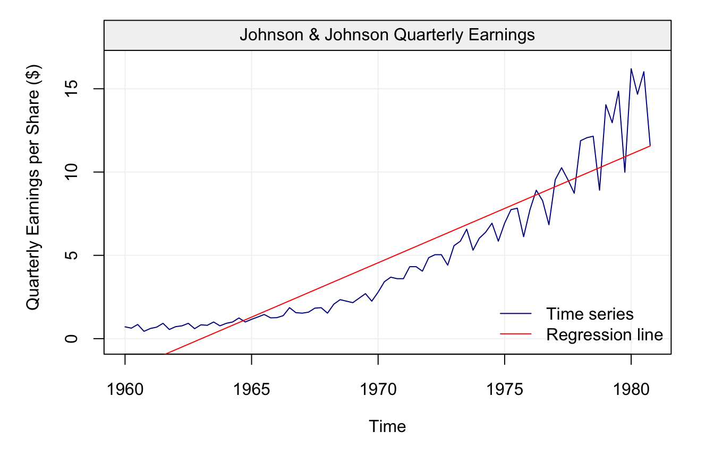
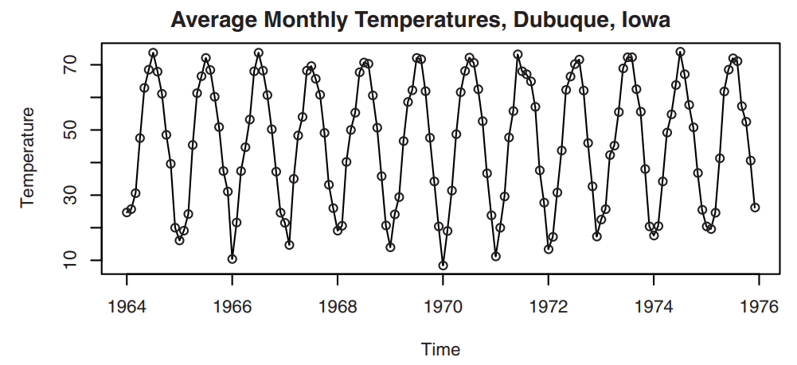
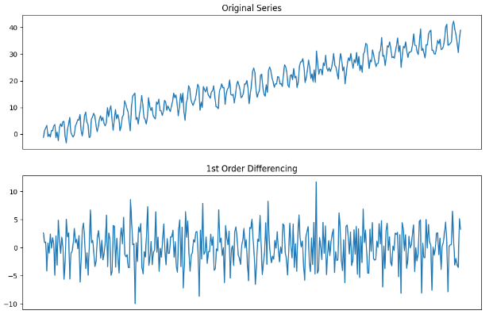
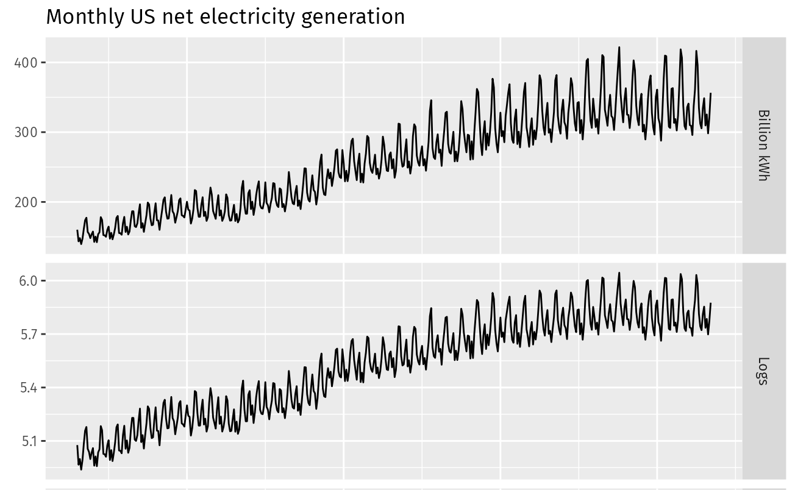
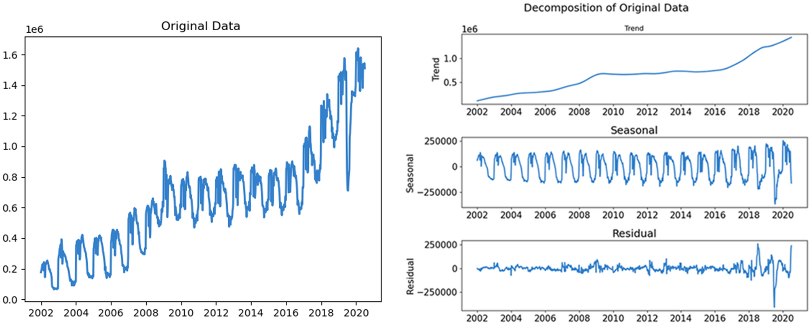

5. Series de Tiempo
Introducción
Los métodos estadísticos que hemos estudiado para resumir información muestral e inferir sobre una población dependen de supuestos fuertes: la muestra aleatoria debe estar compuesta por observaciones independientes e igualmente distribuidas. Entre otras cosas, esto nos permitía darle la misma ponderación o relevancia a cada observación. En la práctica, sin embargo, existen situaciones comunes en las que los supuestos mencionados son insostenibles.
Supongamos que comenzamos nuestro propio emprendimiento y queremos predecir la ganancia media por mes. Para ello podríamos registrar las ganancias reales durante los primeros meses y utilizar esta información para construir un intervalo de confianza del 95%.
¿Este intervalo resulta útil a la hora de hacer predicciones? Seguramente no. Como puede verse en el gráfico, la ganancia tiende a aumentar mes a mes. Esto provoca que los intervalos de confianza que podamos calcular con información pasada estén permanentemente desactualizados.
Podríamos considerar, entonces, una técnica de modelización, como regresión lineal.

¿Es esto una fiel representación de las ganancias mensuales? ¿Podríamos usarlo para extrapolar sobre la ganancia en meses futuros? No siempre. Pensemos qué ocurriría si nuestro emprendimiento estuviese basado en la venta de un producto cuya demanda es alta en un momento del año y baja en otra; por ejemplo: buzos pólar. Sería de esperar que la ganancia aumente en los meses de invierno y decrezca en los meses de verano. Nuestro modelo basado en una línea recta se desviaría groseramente de este comportamiento. De hecho, no existe polinomio (sin importar cuán alto sea su grado) que pueda modelar tal comportamiento sin eventualmente alejarse de él.
Muchas variables experimentan una evolución temporal que está atravesada por diversos factores: tendencias, fluctuaciones, oscilaciones, valores atípicos, entre otros. Si bien dichos factores dificultan el uso de técnicas estadísticas tradicionales, al mismo tiempo brindan un terreno fértil para el desarrollo de herramientas diseñadas específicamente para estos casos.
Esta última unidad es una introducción a las series de tiempo: sus componentes, cómo se clasifican, cómo se analizan y cómo pueden usarse para hacer pronósticos.
Serie de tiempo
Una serie de tiempo es una secuencia ordenada de observaciones.

Si bien cada observación suele registrar el valor de una única variable de interés, implícitamente estamos contrastando dos variables: la de interés versus el tiempo. 1
Los datos de este estilo, obtenidos de observaciones recopiladas secuencialmente a lo largo del tiempo, son muy comunes y tienen utilidad muchas áreas de estudio.
Negocios: tasas de interés semanales, precios diarios de cierre de acciones, índices de precios mensuales.
Meteorología: temperaturas diarias, índices de precipitación y sequía anuales, velocidades del viento horarias.
Agricultura: producción anual de cultivos y ganado, erosión del suelo, ventas de exportación.
Biología: actividad eléctrica del corazón, a intervalos de milisegundos.
Ecología: abundancia de una especie animal en una región determinada, a través del tiempo.
El propósito del análisis de series de tiempo generalmente es doble. Por un lado, se pretende describir el comportamiento de una serie, entender sus características y patrones, y evaluar las diversas variables que ayudan a explicarla. Por otro lado, se intenta predecir o pronosticar los valores futuros de una serie en función de la información histórica de la que se dispone. En síntesis, el análisis de series de tiempo consiste en comprender y predecir patrones de datos que cambian con el tiempo.
Autocorrelación
Cabe preguntarse ahora por qué las series de tiempo conforman su propia rama de estudio dentro de la Estadística. Como ya se vio en la introducción, las herramientas estadísticas clásicas pueden no ser eficaces a la hora de resumir la información de una serie o de inferir sobre ella. Existe una razón matemática detrás de esto.
La naturaleza intrínseca de una serie de tiempo es que sus observaciones son dependientes o están correlacionadas, y por lo tanto el orden de las observaciones es importante. En otras palabras: el futuro depende del pasado. En la terminología de series de tiempo, este fenómeno se conoce como autocorrelación, pues implica la correlación de una variable consigo misma (pero en tiempos distintos).
Como ya sabemos, los procedimientos estadísticos comunmente aplicados a muestras aleatorias asumen independencia entre las observaciones. Por lo tanto, su uso queda invalidado para analizar series de tiempo. Esto, sin embargo, no supone un problema: existen muchas otras herramientas específicamente diseñadas para datos de este estilo.
Características de una serie
Una serie de tiempo puede presentar múltiples características o propiedades que describen su comportamiento. Estas características tienen una definición precisa (matemática) pero a su vez son fácilmente identificables observando el gráfico de una serie.
Sea \(y_t\) el conjunto de valores que componen la serie de tiempo, donde \(t=1,2,\cdots,n\) es el índice que usamos para referirnos a las \(n\) instancias temporales en que la variable fue medida. De este modo:
- \(y_1\) es la primera observación.
- \(y_2\) es la segunda observación, que ocurrió luego de \(y_1\).
Y así sucesivamente. En general, \(y_t\) siempre es sucedido por \(y_{t+1}\), y el tiempo \(t\) puede estar medido en días, meses, años, etcétera.
Estacionariedad
Una serie de tiempo se dice estacionaria si la media y la variabilidad de la serie se mantienen constantes a lo largo del tiempo. Por el contrario, una serie se dice no estacionaria si la media y/o la variabilidad cambian a lo largo del tiempo. Es decir:
\[y_t \text{ estacionaria } \iff E(y_t) = \mu \;\wedge\; V(y_t) = \sigma^2 \quad\forall\; t=1,2,\cdots,n\]
También podemos hablar de estacionariedad en media y estacionariedad en variancia cuando sólo se cumple una de las dos condiciones de estacionariedad.
La media constante se corresponde visualmente con valores oscilantes alrededor de una recta horizontal. La variancia constante se corresponde con oscilaciones de igual magnitud a través de todas las mediciones.
A continuación se ejemplifica esta caracterización con cuatro series de tiempo distintas.

Ventas de casas: a simple vista puede parecer estacionaria en media, pero no lo es. Las mediciones son mensuales, y dentro de cada año puede verse que existen meses de muchas ventas (en la mitad del año) y meses de pocas ventas (a principio y fin de año). Por lo tanto, la media de enero es menor a la media de julio y no se cumple el primer requisito. La estacionariedad en variancia sí parece cumplirse.
Compras de celulares: hay una clara disminución en compras a través del tiempo, por lo que la media no es constante. La variancia parece ir aumentando con el tiempo: tampoco es constante. No se cumple ninguno de los requisitos.
Consumo de energía: no es estacionaria en media, por el claro aumento de consumo en el tiempo. Tampoco es estacionaria en variancia, pues al aumentar la media parece aumentar también la variabilidad.
Precio de cierre: parece ser estacionaria en media: los valores oscilan erráticamente alrededor del cero. La variancia, sin embargo, no parece ser constante: parece aumentar en las últimas mediciones.
Tendencia
Es el comportamiento monótono (creciente o decreciente) de una serie a través del tiempo. Por “monótono” se entiende que se habla de una cinética a grandes rasgos, obviando oscilaciones menores que son despreciables ante la presencia de tal cinética. Naturalmente, si existe tendencia entonces la serie no es estacionaria (en media).
En los ejemplos anteriores, se ve una tendencia decreciente en las compras de celulares y una creciente en el consumo de energía. En estos casos la tendencia parece ser aproximadamente lineal, pero esto no tiene por qué ser así.

Estacionalidad
Una serie estacional es aquella que presenta un cambio periódico en la media de la serie, es decir, en cantidades regulares de tiempo. Dicha periodicidad suele darse en intervalos relativamente cortos de tiempo: una semana, un mes, un trimestre, un año.
Advertencia
A pesar de que sus nombres son similares, los conceptos de estacionariedad y estacionalidad son muy distintos. De hecho, si una serie es estacional entonces no es estacionaria.
Las manifestaciones más evidentes de estacionalidad se dan en las variables relacionadas al clima, siendo la estacionalidad de periodicidad anual.

Comportamiento cíclico
Del mismo modo que la estacionalidad, esta característica refiere a comportamientos recurrentes, aunque en este caso no tienen por qué ser exactamente periódicos. Si tienen un período, este suele ser en un intervalo grande de tiempo (habitualmente superior a un año). Son el efecto de fenómenos macroscópicos, como la alternancia de períodos de prosperidad y crisis económicas. Pueden ser difíciles de reconocer visualmente.
Diferenciación
Aunque suene raro, la estacionariedad (en media y variancia) es una propiedad deseable en las series de tiempo: muchos modelos requieren estacionariedad para ser aplicados. No obstante, como hemos visto, es difícil que una serie cumpla naturalmente con los requisitos.
¿Qué hacemos si nuestra serie no es estacionaria? Hay distintas soluciones, las cuales se aplican dependiendo de la causa raíz. En casos donde la serie no es estacionaria por presentar una tendencia, entonces una posible solución es la diferenciación.
La diferenciación de primer orden se logra considerando: \[w_t = \nabla y_t = y_t - y_{t-1}\]
Como consecuencia directa de este cálculo: si la serie \(y\) tiene \(n\) observaciones, la serie \(w\) tendrá \(n-1\).

Para series cuya tendencia es aproximadamente lineal, la diferenciación de primer orden corrige la falta de estacionariedad. A veces esto no es suficiente porque la serie puede exhibir, por ejemplo, una tendencia cuadrática. En este caso una diferenciación de segundo orden puede ser la solución:
\[u_t = \nabla w_t = w_t - w_{t-1} = (y_t - y_{t-1}) - (y_{t-1} - y_{t-2}) = y_t - 2y_{t-1} + y_{t-2}\]
Si la serie original tiene \(n\) observaciones, la doble diferenciación tendrá \(n-2\).
En general, para un polinomio de grado \(k\) se pueden aplicar \(k\) diferenciaciones sucesivas para lograr la estacionariedad en media.
Pero a veces los polinomios no son suficientes. ¿Qué pasa si el crecimiento es exponencial?
Transformación
Existe también la posibilidad de aplicar una transformación sobre la serie, es decir, elegir una función real y transformar cada valor de la serie a través de tal función. En este caso, a diferencia de la diferenciación, la nueva serie tendrá el mismo número de observaciones que la serie original.
Un ejemplo de una transformación es \(z_t = \log(y_t)\), la cual podría usarse ante una tendencia exponencial.
Las transformaciones no sólo se utilizan para corregir tendencias. A veces también son útiles para corregir la heterocedasticidad: variancia no constante en el tiempo.

Proceso “ruido blanco”
El proceso estacionario más simple (trivial) que existe es el que se conoce como ruido blanco, el cual cumple las siguientes condiciones:
\[ \begin{cases} E(y_t) = 0 \quad\forall\; t \\ V(y_t) = \sigma^2 \quad\forall\; t \\ Cov(y_t,y_{t-k}) = 0 \quad \forall\; k \end{cases} \]
Las dos primeras condiciones corresponden a estacionariedad (en media y variancia, respectivamente), mientras que la tercera refleja que las mediciones de la variable están incorrelacionadas a través del tiempo. En otras palabras, este es un proceso sin memoria: conocer valores pasados no provee información alguna sobre el futuro.
Descomposición de una serie
La modelización de una serie de tiempo suele realizarse en etapas: se identifican los componentes (características) de la serie, se las separa mediante operaciones matemáticas como diferenciaciones y transformaciones, y se modela cada componente por separado. Esto permite aprovechar toda la información proveniente de las observaciones para lograr un pronóstico más completo.
De este modo, por ejemplo, si una serie presenta una tendencia y un comportamiento estacional, puede expresarse como \[\text{serie original} = \text{tendencia} + \text{estacionalidad} + \text{ruido blanco}\] y cada uno de estos sumandos puede representarse individualmente para formar el modelo completo.

Aunque el ordenamiento entre las observaciones suele ser a través del tiempo (particularmente en intervalos equiespaciados), también puede darse en otras dimensiones, como el espacio.↩︎